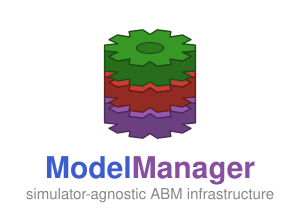

ModelManager.jl
ModelManager.jl is simulator-agnostic infrastructure for managing agent-based modeling (ABM) campaigns in Julia. It provides the generic base layer — a trial hierarchy, parameter variations, an SQLite database, a parallel runner, global sensitivity analysis, and ABC-SMC calibration — that simulator-specific packages build on by implementing the AbstractSimulator interface.
ModelManager is not used directly to run a particular simulator. Instead, a backend such as PhysiCellModelManager.jl (PCMM) implements AbstractSimulator and exposes the user-facing workflow. ModelManager supplies everything underneath.
New here? Read What ModelManager is to understand where this package sits, then Installation. If you are building a backend, jump to Building a Simulator Backend.
Where do I look?
| I want to… | Go to |
|---|---|
| Understand ModelManager's role in the ecosystem | What ModelManager is |
| Add the package as a dependency | Installation |
Understand Simulation / Monad / Sampling / Trial | The trial hierarchy |
Learn how inputs.toml and the data/ directory work | Project configuration |
| Understand the database schema and run queries | The database |
| Run trials in parallel or on a cluster | Running simulations, HPC support |
| Change parameter values across runs | Variations |
| Sweep with LHS, Sobol, or RBD designs | Space-filling designs |
| Run a global sensitivity analysis | Sensitivity analysis |
| Calibrate a model to data with ABC-SMC | Calibration |
| Implement a new simulator backend | Building a Simulator Backend |
| Delete simulations or reset the database | Managing data |
| Look up a function's signature | the Alphabetical index |
Issues
Found a bug or have a question? Please open an issue on the ModelManager.jl GitHub page.